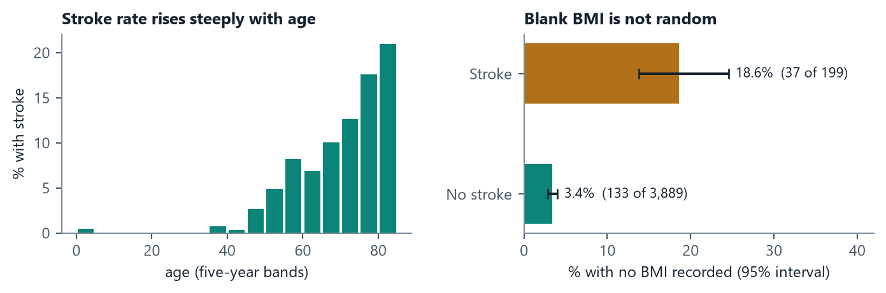
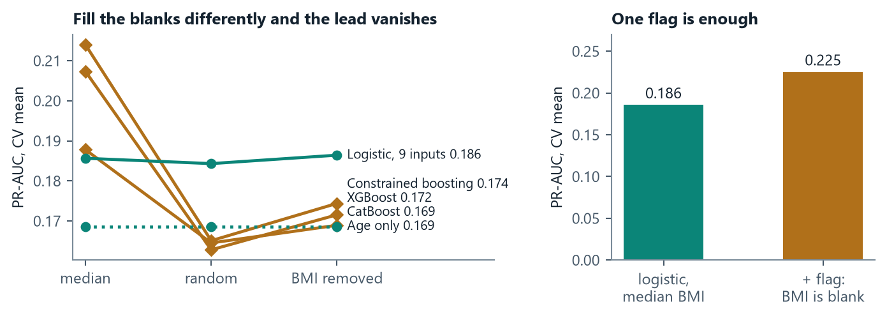
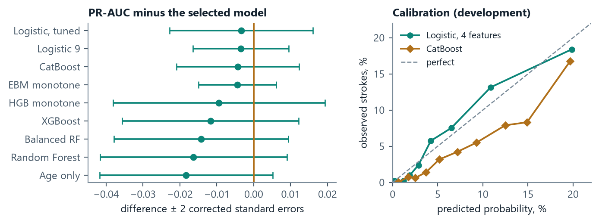
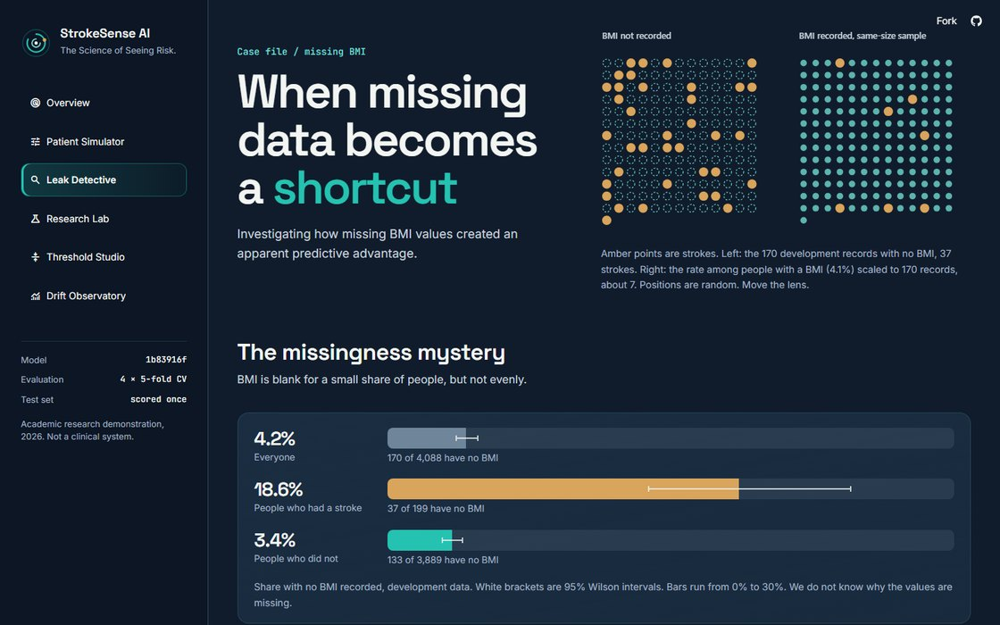
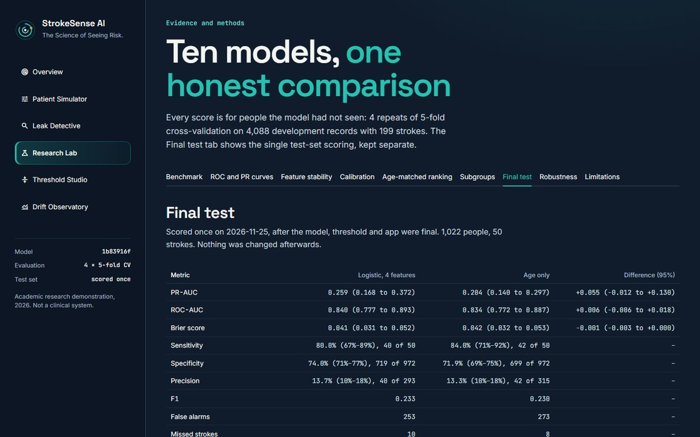
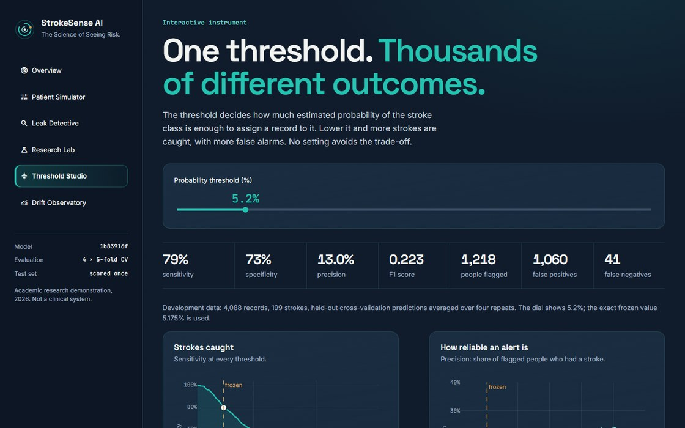

StrokeSense AI, a leakage-tested study of classifying the recorded stroke label. Academic project, instructor Hanna Abi Akl, November 2026. Author: Maryem Brik.
App: strokesense-ai.streamlit.app Code: github.com/maryembrik/StrokeSense-AI
Task. Binary classification: 1 means the patient had a stroke, 0 means not. The model estimates the probability of class 1; a threshold turns it into a class. The dataset has no dates, follow-up or horizon, so "prediction" here means predicting the label, not a future stroke.
5,110 people, 249 strokes (4.87%), no duplicates. BMI is blank for 201 people, smoking is "Unknown" for 1,544, and 856 are under 18. All rows were kept. Predicting "no stroke" for everyone gives 95.1% accuracy, so accuracy is useless here and PR-AUC is primary. The data were split 80/20, stratified, seed 42: 4,088 development rows (199 strokes) and 1,022 test rows (50).

Age confounds other variables. "Ever married" has an odds ratio of 4.14, but 0.67 after adjusting for age: it mainly marks older people.
Filling every blank with one median lets a tree isolate the blanks. Filling them at random, or removing BMI, erases boosting's lead. A direct check agrees: adding only a "BMI is blank" flag to logistic regression raises PR-AUC from 0.186 to 0.225.

We excluded BMI because we do not know why it is blank, or whether that would hold for new people. This does not prove target leakage. The cost, at group level: among the 170 development records with no BMI the model expected 14 strokes in total and 37 occurred (ratio 2.6, approximate 95% 1.8–3.3). This is a property of the group total. It does not show that each such person is underestimated, and a blank BMI is no evidence about an individual: 133 of the 170 had no stroke.
Final features: age, average glucose, hypertension, heart disease. Stability selection repeated inside 20 outer folds chose them 20, 13, 12 and 3 times; gender, smoking, work, residence and marriage were never chosen. Heart disease was kept for clinical plausibility, which is not evidence of predictive value (see Robustness). Selection inside the folds gives PR-AUC 0.174, against 0.190 for the four features fixed after exploration, so 0.190 is exploration-informed and probably optimistic; 0.174 is the conservative, selection-aware estimate. All nine BMI-free variables give 0.186.
Ten models, 4 × 5-fold stratified cross-validation. Scaling and encoding are fitted inside folds. Seven models are tuned by random search in an inner 5-fold loop over deliberately regularised spaces (for example trees of depth 1–3, strong L2), which also chooses 4 or 9 features. Three are fixed: the selected model (L2, C = 0.1), Logistic 9 and age only (a spline). Every threshold is the highest that reaches 80% sensitivity on inner predictions. No resampling: logistic with SMOTE raised the mean predicted probability to 31.4% against a true 4.9%.
| Model | PR-AUC | ROC-AUC | Sens. | Spec. | Prec. | F1 | Train − unseen PR |
|---|---|---|---|---|---|---|---|
| Logistic 4, selected | 0.190 | 0.842 | 79.3% | 73.3% | 13.2% | 0.226 | -0.008 |
| Logistic | 0.187 | 0.839 | 80.8% | 72.8% | 13.2% | 0.227 | +0.000 |
| Logistic 9 | 0.186 | 0.839 | 79.9% | 73.1% | 13.2% | 0.227 | +0.006 |
| CatBoost | 0.186 | 0.840 | 79.1% | 73.7% | 13.3% | 0.228 | +0.016 |
| EBM monotone | 0.185 | 0.838 | 79.8% | 72.4% | 12.9% | 0.222 | +0.007 |
| HGB monotone | 0.180 | 0.838 | 81.0% | 72.7% | 13.2% | 0.227 | +0.027 |
| XGBoost | 0.178 | 0.833 | 80.3% | 72.0% | 12.8% | 0.220 | +0.038 |
| Balanced RF | 0.176 | 0.837 | 81.9% | 70.9% | 12.6% | 0.218 | +0.032 |
| Random Forest | 0.174 | 0.834 | 81.0% | 71.2% | 12.6% | 0.218 | +0.049 |
| Age only | 0.172 | 0.836 | 80.5% | 71.5% | 12.6% | 0.218 | -0.005 |
| Logistic, selection inside folds* | 0.174 | 0.835 | 79.5% | 72.5% | 12.9% | 0.222 | – |
* Conservative estimate from a separate run with the same outer folds; the threshold comes from different inner folds.

Logistic regression was chosen for simplicity and calibration (slope 1.09, 95% 0.95–1.24), not superiority. A patient bootstrap of fixed predictions is less neutral: it favours the selected model over XGBoost on ROC-AUC, and gives age alone 69 more false alarms (95% 43–99) for 3.8 more strokes caught (−4.8 to 12.5), with no clear net-benefit difference. It ignores retraining variation, so we do not lead with it.
Checks. The selected model shows no positive train-to-unseen PR-AUC gap in this validation (-0.008), while Random Forest shows a larger one (+0.049). This does not rule out overfitting or selection-related optimism. With shuffled labels ROC-AUC falls to 0.50 over 200 fits. No identical feature rows between development and test. Splines or interactions on the four features add nothing (PR-AUC 0.187–0.191).
The model and its 5.175% threshold were frozen before the test rows were scored. The development column is a 20-fold mean (pooling folds instead gives a lower PR-AUC, 0.172). Test ranking intervals use 4,000 bootstrap resamples, rates use Wilson intervals. Paired differences compare both models on the same resampled people.
| Metric | Development, 4 features | Test, 4 features (95%) | Test, age only (95%) | Paired difference (95%) |
|---|---|---|---|---|
| PR-AUC | 0.190 | 0.259 (0.168–0.372) | 0.204 (0.140–0.297) | +0.055 (-0.012 to +0.130) |
| ROC-AUC | 0.842 | 0.840 (0.777–0.893) | 0.834 (0.772–0.887) | +0.006 (-0.006 to +0.018) |
| Brier score | 0.043 | 0.041 (0.031–0.052) | 0.042 (0.032–0.053) | -0.001 (-0.003 to +0.000) |
| Sensitivity | 0.793 | 0.800 (0.670–0.888) | 0.840 (0.715–0.917) | – |
| Specificity | 0.733 | 0.740 (0.711–0.766) | 0.719 (0.690–0.746) | – |
| Precision | 0.132 | 0.137 (0.102–0.181) | 0.133 (0.100–0.175) | – |
| F1 | 0.226 | 0.233 | 0.230 | – |
| False alarms / missed strokes | 1036.5 / 41.2 (of 4,088) | 253 / 10 (of 1,022) | 273 / 8 | – |
The model expected 49.8 test strokes and 50 occurred. Test PR-AUC is higher than in development, but the development value is inside its interval: this is compatible with chance. At its own threshold, age alone caught 42 strokes with 273 alarms; our model caught 40 with 253. Same-age ranking: on development data, the model ranks 59.0% of pairs (one stroke, one not, within three years of age, same held-out fold) correctly, against 52.9% for age: +0.061 (95% 0.015–0.104; every pair equal, 150 patient resamples with predictions fixed). Counting every stroke equally gives +0.057 (0.017–0.102). This is a concordance gain, different from the PR-AUC difference. It keeps features and predictions fixed; repeating selection and training gives +0.042 (-0.019 to +0.101) (see Robustness). The two answer different questions and do not conflict: the gain is sensitive to which features get selected.
Calibration by group (development, expected vs observed strokes): 41-60 48 vs 57; 61-70 42 vs 42; 71+ 97 vs 97; Women 115 vs 112; Men 84 vs 87; No BMI recorded 14 vs 37. Within age 71+ the slope is 0.49 (-0.01–0.90): the average is right, the ranking inside the group is weak.
Adults only? Training on adults only and on all ages gives the same adult PR-AUC (0.190 and 0.191, difference +0.0002 ± 0.0041), so no row was removed. This check was run after the freeze and changed nothing.
Robustness (development only, after the freeze; nothing was changed). Heart disease: four inputs minus three gives PR-AUC -0.0004 ± 0.0143 over 100 folds (better in 57). There is no consistent improvement, so it is not justified on predictive grounds; it stays because the model was already frozen and tested with it. Smoking: 30.5% is Unknown. Stability selection was repeated with Unknown as a category, drawn at random within age band (assumes Unknown people resemble known people of their age), removed, pooled as ever/never, and set to either extreme as a bound. Smoking was selected in at most 1 of 100 draws in one treatment and never in the others. This concerns added prediction in this dataset, not medical effect.
Retraining-aware intervals: 500 stratified resamples; each repeats stability selection, refits and scores the people left out (about 73 strokes), with no convergence warnings.
| Gain over age alone | Four features fixed, retrained | Features selected again, retrained |
|---|---|---|
| PR-AUC | +0.016 (-0.016 to +0.052) | +0.010 (-0.023 to +0.049) |
| ROC-AUC | +0.007 (-0.006 to +0.017) | +0.004 (-0.008 to +0.015) |
| Same-age ranking | +0.062 (+0.007 to +0.120) | +0.042 (-0.019 to +0.101) |
With selection repeated, every interval includes zero: the evidence that the extra features help beyond age is suggestive, not established. Out-of-bag training uses about 63% of distinct people, so scores are slightly pessimistic.
Need new data.
| Limitation | Why this dataset cannot resolve it | What would be needed | Effect on interpretation |
|---|---|---|---|
| No external validation | Every row comes from one source, so a split of it cannot show how the model behaves elsewhere. | An independent dataset with the same inputs and outcome definition, scored once with the frozen model. | Results describe this dataset. Performance elsewhere is unknown. |
| Only 50 strokes in the locked test set | The dataset holds 249 strokes; re-scoring or re-splitting would break the single test. | A new test sample with many more strokes. | Test intervals are wide. A small real advantage over age, or none, are both compatible with the result. |
| One stroke among 674 development records under 18 | Nothing can be estimated from one case. | A paediatric dataset with enough cases, probably with other predictors. | Output under 18 is extrapolation from older records and cannot be checked. |
| Limited discrimination at younger ages | Age dominates. At 41-60 the threshold catches a third of development strokes (19 of 57); catching 46 of 57 would cost about 591 false alarms among 1,264 people. | More strokes at these ages and stronger inputs, for example measured blood pressure, cholesterol and medication. | The threshold works almost as an age cut-off. The 12 test strokes at 60 or under are a warning sign, not a precise estimate. |
| Low precision and the false-alarm trade-off | Strokes are 4.9% of records and four inputs separate classes weakly. Moving the threshold only trades precision against missed strokes. | Better inputs, or a stated cost of each error from the intended users. | Class 1 does not mean a stroke: 40 of 293 people put in class 1 in the test had one. |
Cannot be resolved from the current dataset.
| Limitation | Why this dataset cannot resolve it | What would be needed | Effect on interpretation |
|---|---|---|---|
| No temporal information | There are no dates for inputs or strokes and no follow-up. | A cohort that is stroke-free at baseline, with dated measurements and a fixed horizon. | The output is the probability of a recorded label, not the chance of a future stroke. Inputs may have been measured after the stroke. |
| Unknown collection process and reasons for missing BMI | The file was supplied by the university without a description of sampling, measurement or missingness. | The original protocol, or a study recording why values are missing. | The population is undefined. The blank-BMI pattern may not exist elsewhere, so it is not used as a predictor. |
| Exploration-informed feature selection | The four inputs were fixed after exploring the development data; that cannot be undone. Early integrity and target summaries also covered test labels, though no model used them. | A pre-specified analysis on new data. | 0.190 is probably optimistic; 0.174 repeats selection inside the folds. |
| No independent preregistration of freeze before test | The order is shown only by project hashes and timestamps, and the repository was published after scoring. | A time-stamped registration before scoring a new test set. | A reader must trust the project record for the order of events. |






Dataset provenance. Dataset provided by the university for the course project. Its original provenance was not independently verified.
Methods. Nadeau, Bengio. Inference for the generalization error. Mach Learn 2003;52:239–281, doi:10.1023/A:1024068626366 (corrected standard errors). Cawley, Talbot. On over-fitting in model selection. JMLR 2010;11:2079–2107 (nested selection). Meinshausen, Bühlmann. Stability selection. JRSS B 2010;72:417–473, doi:10.1111/j.1467-9868.2010.00740.x. Wilson. Probable inference. JASA 1927;22:209–212 (rate intervals). van den Goorbergh et al. The harm of class imbalance corrections. JAMIA 2022;29:1525–1534, doi:10.1093/jamia/ocac093 (no resampling). Kapoor, Narayanan. Leakage and the reproducibility crisis. Patterns 2023;4:100804, doi:10.1016/j.patter.2023.100804 (shortcut check).
Evaluation and reporting. Saito, Rehmsmeier. The precision-recall plot is more informative. PLoS ONE 2015;10:e0118432, doi:10.1371/journal.pone.0118432. Van Calster et al. Calibration: the Achilles heel. BMC Med 2019;17:230, doi:10.1186/s12916-019-1466-7. TRIPOD+AI. BMJ 2024;385:e078378 (self-check in docs/TRIPOD_AI.md).
This educational research application classifies observations according to the stroke label available in the dataset. It has not been validated as a prospective future-stroke prediction tool or a clinical risk calculator.